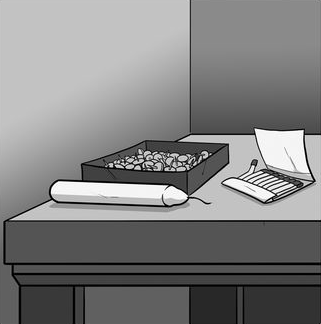
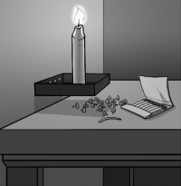
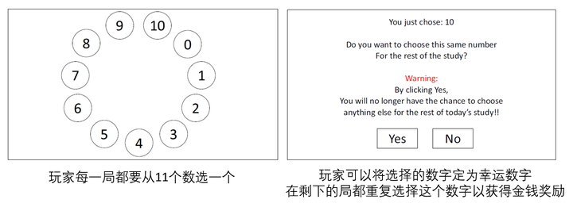
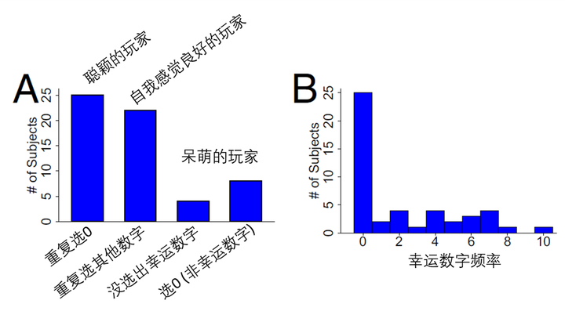
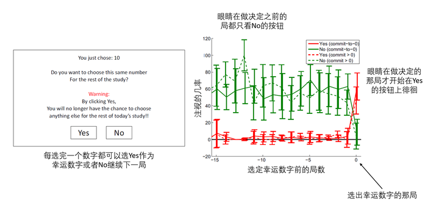
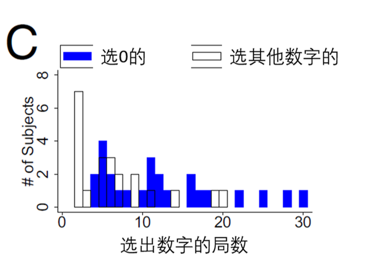

如果我给你一根蜡烛，一盒图钉和一盒火柴，让你在2分钟内把蜡烛固定在（软木）墙上并点燃，并且点燃后蜡不能滴到桌面上。你怎么办？

思考ing…
也许你会尝试用图钉把蜡烛钉在墙上，或是将蜡烛点燃用融化的蜡做胶水，但是这些方法似乎都行不通。你懵逼的看着桌上简单的几件物品，无奈的等待时间的流逝。就在审判的钟声敲响之前，你仿佛被智慧的闪电击中，恍然大悟。你将所有的图钉从盒子里倒了出来，用迅雷不及掩耳盗铃之势用图钉把装图钉的盒子钉在了墙上，然后把蜡烛小心翼翼的往盒子上一放 – Voila！完成任务！

(注：条条大路通罗马，解决方法可以有很多种)
上面这个测试创造性思维的游戏由格式塔心理学家Karl Duncker在1945年发表。出题人故意没有提到可以或是不可以使用图钉盒子，以限制解题人的思维。大多数的解题人会把图钉盒子当作图钉的容器而不是解决问题的一个部分。当解题人跳出固有的思维时，便会恍然大悟找到答案。我们在生活工作中也常会因为固有思维陷入四处碰壁，找不到出路的局面。在绝望之际，你的运气值爆表，突然就发现了突破口。不论你是科学家有了新发现，或是侦探找到了新线索，亦或是音乐家产生了新灵感，那恍然大悟的感觉就像被智慧的闪电击中一样，是用言语无法形容的狂喜。
当我们恍然大悟的时候，大脑里面到底发生了什么？
上个月在PNAS发表的一篇文章告诉我们，这种看似运气的突破并不是智慧女神的眷顾，而是大脑不断积累后的顿悟。
Ohio州立大学的Chen和Krajbich招了59个天真无邪的学生来玩双人对战游戏。通过记录他们在游戏过程中的眼动方式，Chen和Krajbich希望能了解玩家们在游戏过程中是如何做决定的。
这个游戏一共有30局。每一局玩家要从屏幕上选择0-10之间的一个整数（包括0）。通过比较双方所选的数字来判定输赢。玩家们并不知道游戏的规则，只能通过每一局双方的选择和结果来探索和学习。关键点是，如果玩家摸出了规律，他们可以选择一个幸运数字重复到游戏结束，并相应的获得金钱奖励。

游戏的规则很简单：根据双方选择的数字，选择离两数平均值0.9倍的一方获胜。比如说A选了10，B选了9。两数平均的0.9倍是9.5 x 0.9 = 8.55，B方选的9离8.55更近，B方获胜。若是A选了6，B选了7。两数平均的0.9倍是6.5 x 0.9 = 5.85，A方获胜。
大家看了例子可能就明白了，要获胜就必须要选到比对手要小的数字。那最好的策略就是一直重复选0。一旦玩家发现了这个规律并选择0为幸运数字后，就会被判定为「恍然大悟」了。
研究人员发现大约有四成的玩家成功的悟到了游戏的规律，选择了幸运数字0。另外四成的玩家错误的选择了比0大的幸运数字。剩下二成的玩家比较呆萌，在30局内并没有摸出游戏的规律，没有选出幸运数字。

那这些聪颖和呆萌玩家的眼动轨迹有什么区别呢？
聪颖的玩家，在选择幸运数字0的前几局就已经开始往较小的数字看了。这些玩家在每一局思考的时间也比其他玩家要长。这说明大脑已经在累积证据，向最终的解决方案靠近。然而出乎意料的是，一直到在他们决定选择0的前一局，他们的眼睛并没有往Yes的按钮上看（见下图）。也就是说，选0的决定是在下一局「突然」发生的，也就是所谓的恍然大悟的感觉。

这个研究告诉我们，那些恍然大悟的瞬间并不是完全随机的事件。在此之前，大脑在潜意识中就持续的通过分析各种信息来寻求解决问题的途径。一旦大脑积累的信息足够用于解决当前的问题，我们才突然意识到问题的答案，产生一种被智慧的闪电击中的感觉。
要注意的是，恍然大悟并不代表真的找到了解决问题的方法，只是一种意识上的感觉罢了。那些选错幸运数字的玩家，他们并没有找到游戏的奥秘。但是他们能下决心选幸运数字，说明他们可能也经历了所谓恍然大悟的感觉。

那剩下的呆萌的玩家难道天生愚钝吗？我们要认识到30局内没选出幸运数字并不代表这些玩家的大脑没有在努力的寻求答案或是找不出答案。即使是选出幸运数字的玩家间也有明显的个体差异（见上图）。在实验中有些玩家在前几局就选出了幸运数字，有些玩家一直到第30局才发现了游戏的机密。这说明了恍然大悟并不是有和没有的区别，只是在有些人身上发生的比较快，在有些人身上发生比较慢而已。那些在30局以内没有找到奥秘的玩家，也许在第31局就能悟出真理。
你会在30次尝试后就止步不前吗？
参考文献
- Chen, W. J., & Krajbich, I. (2017). Computational modeling of epiphany learning. Proceedings of the National Academy of Sciences, 114(18), 4637-4642.